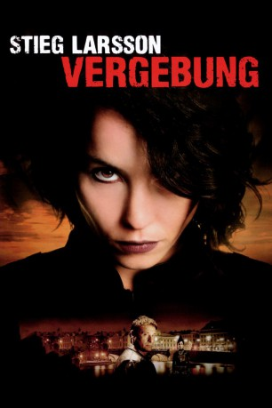
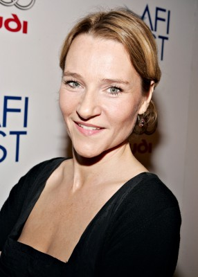
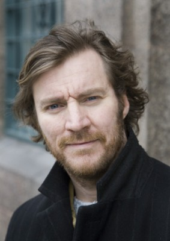
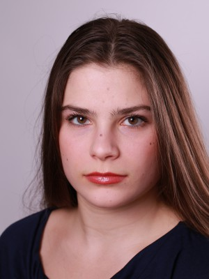
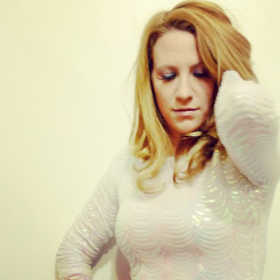
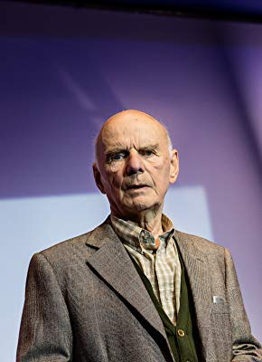

#333 Stieg Larsson Millennium 3 - Vergebung
Alternativ: The Girl Who Kicked the Hornet's Nest (Englischer Titel)
 
 IMDB-Wertung: 7.3 / 10
IMDB-Wertung: 7.3 / 10  Metascore: 60
Metascore: 60 
Lisbeth Salander hat die Machenschaften von ihrem Vater Alexander Zalachenko durchkreuzt, liegt jedoch mit schweren Verletzungen im Krankenhaus, genauso wie Zalachenko selbst. Damit ist sie ein leichtes Ziel für die Geheimdienstgruppe, die ihre Enthüllungen über die Verwicklungen wichtiger öffentlicher Personen in den Mädchenhandelsskandal unter den Teppich kehren will. Prompt findet sie sich vor Gericht wieder, wo sie mit ihrer speziellen psychiatrischen Vorgeschichte und ihrem Verhalten natürlich schlechte Karten hat. Also ermittelt ihr Journalistenfreund Mikael Blomkvist unter Hochdruck, um die Vertuschung zu verhindern und Lisbeth zu rehabilitieren, was weder einfach, noch ungefährlich ist, denn der hünenhafte und schmerzunempfindliche Killer Ronald Niedermann ist auf freiem Fuß.
Jahr: 2009
Dauer: 147 Minuten
FSK: 16
Land: Schweden Studio: NFP Marketing & DistributionTonspuren:
Untertitel:
Auflösung: 1080p (1920×1080) Größe: 31334 MB
Genre: Thriller, Drama, Krimi
Regisseur: Daniel Alfredson
Drehbuch: Stieg Larsson, Ulf Ryberg
Soundtrack: Jacob Groth
Darsteller:
 Michael Nyqvist als Mikael Blomkvist
Michael Nyqvist als Mikael Blomkvist Noomi Rapace als Lisbeth Salander
Noomi Rapace als Lisbeth Salander Lena Endre als Erika Berger
Lena Endre als Erika Berger-  Annika Hallin als Annika Giannini
 Jacob Ericksson als Christer Malm
Jacob Ericksson als Christer Malm- Tanja Lorentzon als Sonja Modig
-  Magnus Krepper als Hans Faste
 Peter Andersson als Nils Bjurman
Peter Andersson als Nils Bjurman-  Tehilla Blad als Ung Lisbeth
-  Alexandra Hummingson als Journalist , uncredited
 Agnes Kittelsen als (uncredited
Agnes Kittelsen als (uncredited- Göran Sjögren als Security Guard , uncredited
- Henrik Sjöman als Journalist , uncredited
- Sofia Ledarp als Malin Erikson
- Anders Ahlbom als Dr. Peter Teleborian
- Micke Spreitz als Ronald Niederman
- Georgi Staykov als Alexander Zalachenko
- Mirja Turestedt als Monica Figuerola
- Niklas Falk als Edklinth
 Hans Alfredson als Evert Gullberg
Hans Alfredson als Evert Gullberg-  Lennart Hjulström als Fredrik Clinton
- Jan Holmquist als Hallberg
- Niklas Hjulström als Ekström
- Johan Kylén als Inspector Jan Bublanski
- Donald Högberg als Jerker Holmberg
- Michalis Koutsogiannakis als Dragan Armanskij
- Aksel Morisse als Anders Jonasson
- Carl-Åke Eriksson als Bertil Janeryd
- Jacob Nordenson als Bertil Wadensjö
- Sanna Krepper als Susanne Linder
- Tomas Köhler als Plague
- Johan Holmberg als Sandberg
- Rolf Degerlund als Georg Nyström
- Ylva Lööf als Domare
- Pelle Bolander als Sonny Nieminen
- Nicklas Gustavsson als Waltari
- Aida Gordon als Sjuksköterska
- Ismet Sabaredzovic als Miro Nikolic
- Hamidja Causevic als Tomi Nikolic
- Tekla Granlund als Jenny , uncredited
- Kerstin Green als Nurse , uncredited
- Per Oscarsson als Holger Palmgren , uncredited
- Alexandra Pascalidou als Herself , uncredited
- Berit Sarvisé als Sekreterare , uncredited
Datei: X:\4-Tetralogie(M-Z)\Stieg Larsson Millennium\Stieg Larsson Millennium 3 - Vergebung (2009, FSK16, 1920x1080).mkv seit 16.02.2015
Festplatte: HD Collection-3(N-Z)-6(A-Z)
 Es gibt insgesamt 10 Filme in der Gruppe '4-Tetralogie(M-Z)\Stieg Larsson Millennium'
Es gibt insgesamt 10 Filme in der Gruppe '4-Tetralogie(M-Z)\Stieg Larsson Millennium'